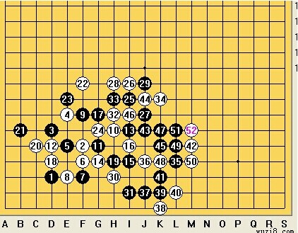

【端午杯】外围的争夺——攻与防的自由转换
#1 【端午杯】外围的争夺——攻与防的自由转换 作者：蓝天蓝 发表时间：2014-6-24 17:37:04
外围的争夺——攻与防的自由转换
作者：chengxian
本局比赛由我和hh选手展开。由hh选手先手执黑，我执白。第一步他落在了如图D3的位置，在一手交换，这是属于比较常见和平衡的开局，白棋可做多种应对，如下这个参考图

这些都是比较常见的白二。实战中我选择了交换，后而我执黑，hh选手执白。落在了F5的位置，这是最常见的白2之一，外围突出的同时又对边角的黑棋形成压制。
1. 外势的争夺。
如图，1-8手已成为一手交换的一种定式。

实战图，被多人认可。此时，黑9一般是在h6的位置，如参考图，

实战中我的黑9选择了f7的位置，选择从另一个方向压制白棋的发展，白10跳三抢夺外围，意图跳出去。11强防填在中间，如实战图，

白12的出现。10出去。12进去，形成另一种平衡，思考之后，黑13进攻感觉不太合适，所以继续贪图外围，下在了I6的位置，白14内聚下在g4.此时如实战图，
白棋22妙手，形成攻势的同时控制外围，让人有一种无法下手的感觉，进攻会落入包围圈，防守则两方都跳出去。如实战图，
不过，上面防住了，下面空间那么大，我长考了一段时间后终于找到了必胜点，如图。

黑棋此时有几种选择，如参考图所示，


实战中因我贪图外围，所以落在了i4的位置，兵行险招，试图将白棋完全逼进角落。
2.攻与防的自由转换。
白16回防，挡在了13与15的跳活二之中，还形成一个活二。如实战图

黑17简单防守。G7.此时如实战图

外围已落入黑棋之手，于是白棋试图通过进攻跳出去，下在了d4的位置，黑棋h4防守，不钻角落，白20c5活三，向外突围，黑棋紧跟防守。
3，妙手夺外围。

黑棋跟防的同时做棋下在e8的位置。24回防顺做活二，二十五好棋，在外围形成攻势，控制上也显的得心应手，白棋此时无论做何种应对黑棋都能有好点，占据外围的同时形成攻势，如实战图，

26好棋，限制空间，顺便做活二，如实战图

4.子力连接，冲毁大坝的滔滔河流
黑27J7强势进攻。白28我觉得是败手之一，单防的话效果会更好一点，因为此时活三，会造成更多的黑棋子力，最后造成不可取代的自我毁灭。实战也恰如我所料。
白棋选择了h9活三，之后局面如实战图。

白棋已基本必败，白30h3活三，试图限制下黑棋的子力连接。黑31防下，继续做活二。之后白32h7活三，用进攻来防守。黑33h8做43，如图，白34是强防。


白36下在了j4的位置，试图防守。黑通过连攻取胜，取胜路线如下。



最终在L6的位置43取胜。
［此帖子已被 蓝天蓝 在 2014-6-24 17:38:38 编辑过］